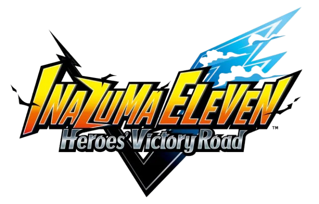
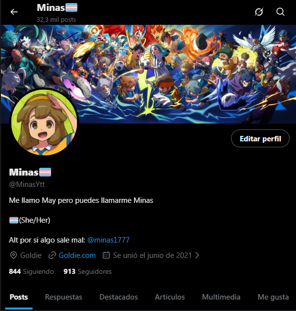

DISCLAIMER
Me presento, me llamo May (AKA Minas) y llevo esperando el victory road desde primaria. Llevo siendo fan desde hace ya muchos años, tanto que solo tengo recuerdos vagos de ver el anime de lo pequeña que era. Nunca abandoné la franquicia y llevo mucho tiempo sacando todo lo que podía y más de los juegos. Esto, incluye el VR el cual llevo jugando mucho desde la beta 1.0 en switch y pese a no haber competido, considero que tengo la experiencia suficiente para hacer mi propia página con toda la información y descubrimientos que he hecho con este juego. Mi objetivo con esta página es reunir la mayor cantidad de información útil del juego que pueda en un mismo lugar, no espero que esto sea de utilidad para la comunidad a nivel general ni nada especial. Quiero dejar claro que NO soy profesional del juego y esta página podría contener errores o información mejorable, pues mi conocimiento esta mayoritariamente basado en descubrimientos recientes y en información de la época de la beta. Si hay algo erróneo o que pueda ser mejorado, mi cuenta de twitter está abierta para dejar mensajes y que eventualmente lo pueda leer y revisar, gracias por su comprensión.

INTRODUCCIÓN
La guía se separa en diferentes apartados siempre accesibles desde el menú superior, el objetivo es otorgar toda la información que el
jugador pueda necesitar para poder mejorar y montar su equipo.
En el apartado Mecánicas explicaré las mecánicas de gameplay del juego, este es un apartado más dedicado a la gente
que no conoce el juego o que necesita revisar una mecánica en concreto, pero su principal objetivo es la gente que recién empieza.
En el apartado Arquetipos explicaré cada arquetipo en base a las cosas que pueda hacer y su estilo de juego, para que
puedas elegir tu estilo de juego.
En el apartado Estadísticas explicaré como afectan las estadísticas a todos los aspectos del juego. Considero
importante explicar este apartado antes de entrar en la información del team building.
En el apartado Pasivas explicaré como trabajar con las pasivas del jugador para que puedas saber qué buscar y obtener
a la par que otorgaré un recurso que puede resultar útil.
En el apartado Supertécnicas explicaré la aplicación de las supertécnicas en cada apartado del juego y los tipos.
En el apartado Hipertécnicas explicaré todos los tipos de hipertécnicas
En el apartado Grindeo explicaré diversas formas de poder grindear cosas útiles en los diferentes modos
En el apartado Información extra aportaré alguna información variada que pueda ser de utilidad saber pero no se pueda
categorizar en el resto de apartados.
En el apartado Tips daré algunos tips y consejos que suela aplicar en mi día a día al jugar, esta parte pretendo que
esté en contínuo desarrollo mientras se descubren cosas nuevas en el juego, se aceptan sugerencias.
Dicho todo esto, que comience la guía